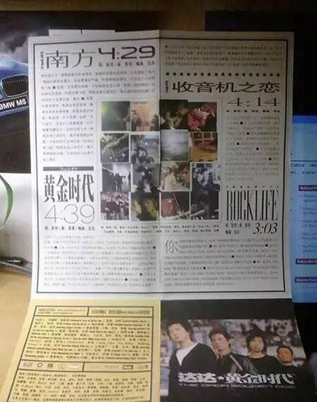
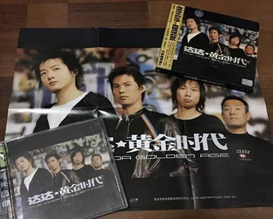

黄金时代live
| 下雨的时候听他的歌，总让我想起呆在南方的日子
下雨的时候听他的歌，总让我想起呆在南方的日子
作者：
1、
青春是一场旅行。亲情、爱情、友情是路上少不了的行李;活力、激情、迷茫、 彷徨是沿途独特的风景;带上理想的指南针，最终将抵达胜利的彼岸!
有一种坚强是假装的，笑容背后是一颗酸楚的心；有一种转身是隐忍的， 心碎了依然惦念那走远的背影；有一种执着是逞强的，没有人愿意输得太多； 若遇变故、纷乱，也有一颗处变不惊的心，一份进退自如的从容。
不乱于心，不困于情。不畏将来，不念过往。如此，安好。深谋若谷，深交若水， 深明大义，深悉小节，已然，静舒。善宽以怀，善感以恩，善博以浪，善精以业， 这般，最佳。无愧于天，无愧于地，无怍于人，无惧于鬼，这样，人生。——丰子恺
不乱于心，不困于情。不畏将来，不念过往。如此，安好。深谋若谷，深交若水， 深明大义，深悉小节，已然，静舒。善宽以怀，善感以恩，善博以浪，善精以业， 这般，最佳。无愧于天，无愧于地，无怍于人，无惧于鬼，这样，人生。——丰子恺
青春是一场旅行。亲情、爱情、友情是路上少不了的行李;活力、激情、迷茫、 彷徨是沿途独特的风景;带上理想的指南针，最终将抵达胜利的彼岸!
2、

不乱于心，不困于情。不畏将来，不念过往。如此，安好。深谋若谷，深交若水， 深明大义，深悉小节，已然，静舒。善宽以怀，善感以恩，善博以浪，善精以业， 这般，最佳。无愧于天，无愧于地，无怍于人，无惧于鬼，这样，人生。——丰子恺
不乱于心，不困于情。不畏将来，不念过往。如此，安好。深谋若谷，深交若水， 深明大义，深悉小节，已然，静舒。善宽以怀，善感以恩，善博以浪，善精以业， 这般，最佳。无愧于天，无愧于地，无怍于人，无惧于鬼，这样，人生。——丰子恺
青春是一场旅行。亲情、爱情、友情是路上少不了的行李;活力、激情、迷茫、 彷徨是沿途独特的风景;带上理想的指南针，最终将抵达胜利的彼岸!
3、
不乱于心，不困于情。不畏将来，不念过往。如此，安好。深谋若谷，深交若水， 深明大义，深悉小节，已然，静舒。善宽以怀，善感以恩，善博以浪，善精以业， 这般，最佳。无愧于天，无愧于地，无怍于人，无惧于鬼，这样，人生。——丰子恺
青春是一场旅行。亲情、爱情、友情是路上少不了的行李;活力、激情、迷茫、 彷徨是沿途独特的风景;带上理想的指南针，最终将抵达胜利的彼岸!
很多时候我们纠结于我们会不会错过某个人，其实不用纠结，纠结也没什么用。 在选择纠结的时候就已经选择了错过。

丑小鸭变成白天鹅、并不只是他有多努力、而且它父母本来就算白天鹅。
大部分成功靠得既不是厚积薄发的努力，也不是戏剧化的机遇，而是早就定好的出身和天赋。
当你饿的时候，有的人会把馒头分给你一半，这是友情，有的人会把馒头让给你先吃，这是爱情， 有的人会把馒头全给你，这是亲情，有的人会把馒头藏了起来，对你说他也饿，这就是社会。
成功不一定是因为你的地位高所以别人高看你一样，也不会因为你父母的富有就多眷顾你一些， 而是因为地位给你从小最好的教育，金钱可以为你避免许多成长中的灾难，穷人家的孩子吃不上饭念不起书，想成功，太难。
爱笑的女生运气不会太差。说实话，如果一个女生运气一直不好，我不知道她怎么笑得出来。
我发现很多混得不好的人看得都很开。也不知道他们是因为看得透彻而不屑于世俗的成功，还是因为不成功而不得不看得开。
丑小鸭变成白天鹅、并不只是他有多努力、而且它父母本来就算白天鹅。
大部分成功靠得既不是厚积薄发的努力，也不是戏剧化的机遇，而是早就定好的出身和天赋。
当你饿的时候，有的人会把馒头分给你一半，这是友情，有的人会把馒头让给你先吃，这是爱情， 有的人会把馒头全给你，这是亲情，有的人会把馒头藏了起来，对你说他也饿，这就是社会。
爱笑的女生运气不会太差。说实话，如果一个女生运气一直不好，我不知道她怎么笑得出来。
可青春不也是这样么，总是在最昏黄的时刻戛然而止，画上急促的句点。
文/昔央